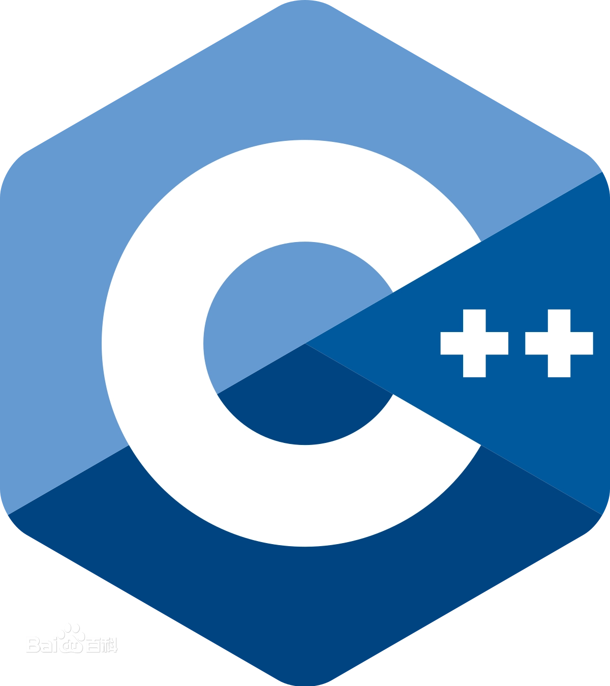
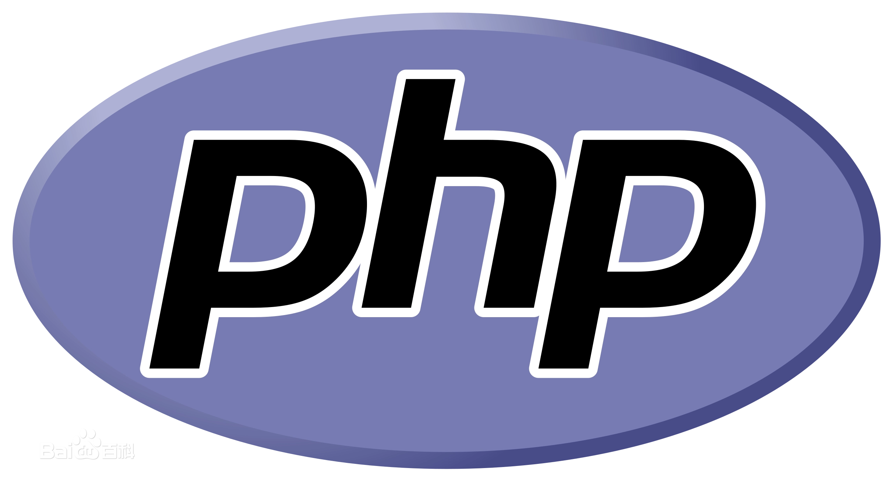

一些主要的编程语言
时至今日，人类已经开发出了机器语言、汇编语言和2500多种高级语言。 其中高级语言是学习计算机编程时接触较多的语言类型。 下面是几种主流高级语言。
点击这里了解高级语言的分类知识。
更多有关编程语言的基础知识，请参阅“时间线”栏目。
C语言
元老级编程语言，经过了漫长发展历史的完整的理论体系，具有举足轻重的地位

C++
由C语言衍生出的编程语言，同时支持面向对象和面向过程编程
 Java
Java
一门随时代快速发展的编程语言，支持跨平台应用的面向对象编程
Python
简单易学、大受欢迎的面向对象、解释型编程语言
C#
微软公司发布的一种由C和C++衍生出来的面向对象的编程语言
运行于.NET Framework和.NET Core之上
 Visual Basic .NET
Visual Basic .NET
微软在2002年开发的一种简单、高级、面向对象的编程语言,
基于微软.NET Framework之上

PHP
在服务器端执行的脚本语言，尤其适用于Web开发并可嵌入HTML中，
同时支持面向对象和面向过程的开发，使用上非常灵活
SQL
一种数据库查询和程序设计语言，用于存取数据以及查询、更新和管理关系数据库系统
 JavaScript
JavaScript
一种具有函数优先的轻量级，解释型或即时编译型的编程语言,常用于Web页面开发
 Objective-C
Objective-C
扩充C的面向对象编程语言,主要使用于Mac OS X和GNUstep这两个使用OpenStep标准的系统